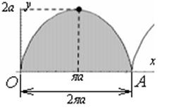

П 25 №6
Найдите площадь фигуры, ограниченной первой аркой циклоиды и отрезком оси абсцисс
Решение:

Точкам  и
и  соответствуют значения параметра и ,
искомая площадь равна
соответствуют значения параметра и ,
искомая площадь равна
и соответствуют значения параметра и ,
искомая площадь равнаОтвет: